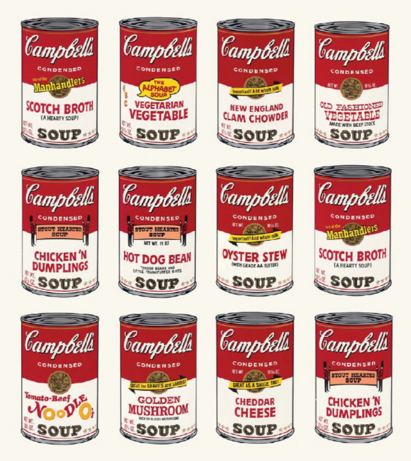
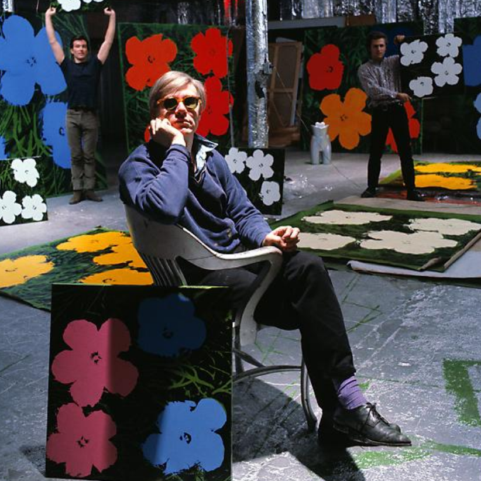
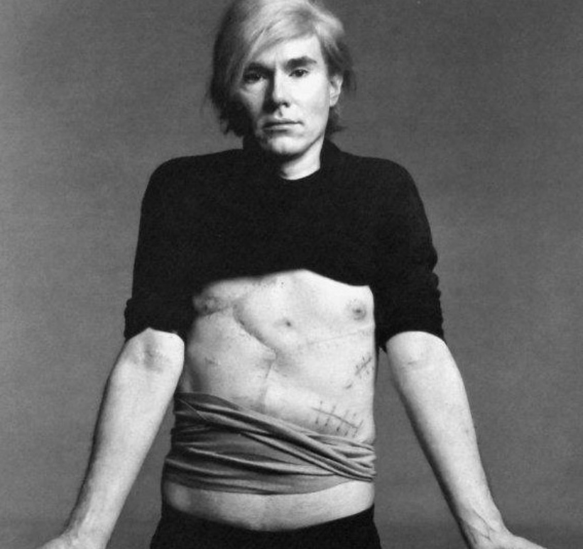
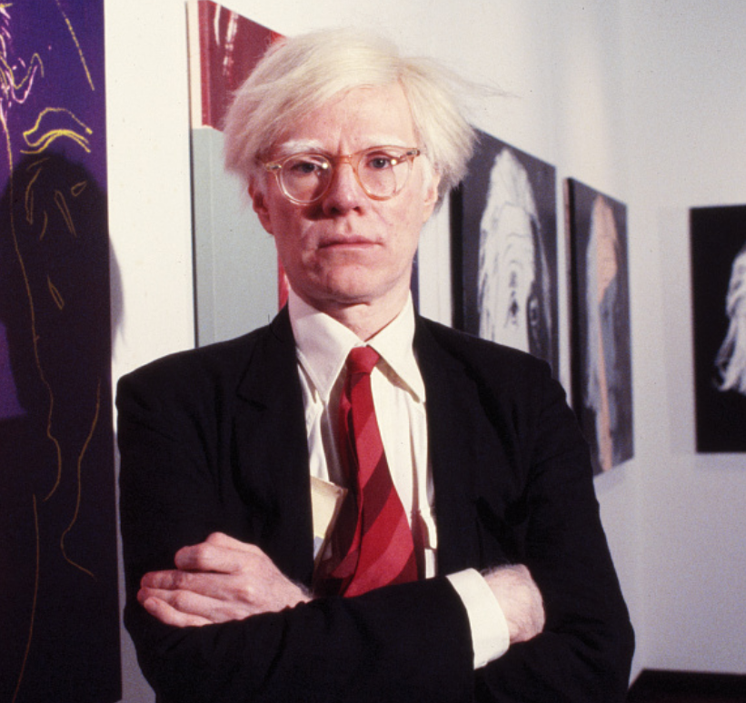

생애
1928년 펜실베이니아주 피츠버그에서 태어났다. 그의 집은 슬로바키아(당시는 체코) 이민 가정으로 위로 두 형이 있었고, 부모님은 독실한 가톨릭 신자로, 그 자신도 평생 교회를 다녔다. 본래 그의 집안 성씨는 바르홀라(Varchola)였으나, 영어식인 워홀로 바꾸었다. 육체 노동자였던 아버지는 1942년 앤디가 14세 때 사망하였고, 그 후 어머니 줄리아가 혼자 아들들을 키운다. 앤디는 아르바이트를 하면서 지역 고등학교에 다니다가, 카네기 공과 대학(현재 카네기멜론 대학교)에서 상업 예술을 전공한다. 1949년 졸업을 하면서 뉴욕 시로 이주하여 잡지 삽화와 광고 제작으로 명성을 쌓았다.

20대
캠벨 수프 캔
1950년 (22세) 대학 졸업 후 뉴욕으로 옮겨 ‘보그’(VOGUE)나 ‘하퍼스 바자’(Harper’s BAZAAR) 등의 잡지 광고와 일러스트로 알려지기 시작했다. 1952년에는 신문광고 미술 부문에서 “아트 디렉터스 클럽 어워드”(Art Director’s Club Award)를 수상하고, 상업 디자이너 일러스트레이터로 성공했지만 동시에 주문주의 요구에 부응하여 그림을 수정 하느라, 사생활에서는 대인 관계에서 타격을 받은 고난의 시기이기도 했다. 그는 나중에 단지 정확하게 비추는 TV 영상처럼 내면을 버리고 표층을 철저히 충실하게 추구하는 길을 선택하게 된다.
앤디 워홀은 실크 스크린(silk screen)을 작업에 사용했다. 워홀이 신발 산업에서 일할 때 잉크를 종이에 묻혀서 인쇄하는 블라티드 라인(blotted line)이라는 초보적인 수준의 인쇄 기술을 개발했다.

30대
팩토리에서 제작 활동
1960년 (32세), 그는 일러스트레이션의 세계를 버리고 미술의 세계로 옮겨간다. ‘배트맨’, ‘딕 트래이시’, ‘슈퍼맨’ 등 만화를 모티브로 한 일련의 작품을 제작하지만, 계약했던 〈레오 캐스테리 갤러리〉에서 뿐만 아니라 미국 만화를 모티브로 한 시대를 풍미한 한 로이 리히텐슈타인의 팝 일러스트레이션 작품을 접한 이후 이 주제에서 손을 떼고 말았다. 당시 미국은 눈부신 경제 발전을 추구하고 있었다.
1960년대부터 그는 〈캠벨 수프 캔〉이나 〈코카콜라 병〉 등 유명한 상품들의 그림을 그리기 시작했다. 후에 그는 실크스크린으로 바꾸어, 대량생산된 상품의 그림을 그리는 것만 아니라 작품 자체를 대량생산하였다. 그는 “예술 노동자”들을 고용하여 뉴욕에 있는 그의 스튜디오인 《팩토리》(The Factory)에서 판화, 신발, 영화, 책 등을 만들어내었다. 워홀의 작품에는 의뢰를 받아 제작한 초상화나 광고도 포함되어 있다.
1961년 (33세), 일상생활에서 흔히 볼 수 있는 〈캠벨 수프 캔〉이나 지폐를 모티브로 한 작품을 그린다. 1962년에는 실크 스크린 프린트를 이용하여 작품을 양산하게 된다. 주제에도 대중적으로 화제가 풍부한 것을 선택했다. 메릴린 먼로의 갑작스러운 죽음으로 그는 곧바로 영화 《나이아가라》의 먼로의 최고의 스틸 사진 초상화를 잘라서 다른 색깔을 입혀서 대량 생산을 계속했다. 제트기 사고, 자동차 사고, 재해 등의 화재의 신문 보도 사진을 사용했다.
1964년(35세)부터는 뉴욕에 《팩토리》(The Factory)라고 하는 스튜디오를 짓는다. 팩토리는 알루미늄 포일과 은빛의 그림물감으로 덮인 공간이며, 마치 공장에서 대량생산 하는 것 같이 작품을 제작하는 것을 이미징하여 만들어졌다. 그는 여기서 예술 노동자(art worker; 아트 워커)를 고용해, 실크 스크린 프로세스 프린트, 구두, 영화 등의 작품을 제작 한다. 팩토리는 믹 재거(롤링 스톤스), 루 리드(벨벳 언더그라운드), 트루먼 커포티(작가), 에디 세즈윅(모델) 등 아티스트가 모이는 장소가 된다.
1965년(36세), 벨벳 언더그라운드(The Velvet Underground; 이하 V.U.)의 데뷔 앨범을 프로듀싱 한다. 워홀은 V.U.의 연주를 듣고 공동 작업을 신청해, 배우 겸 모델인 니코를 데려와 합류시킨다. 1967년 3월 발매한 그들의 데뷔작 《The Velvet Underground & Nico》에서는 프로듀스와 자켓 디자인을 다루었다. 실크 스크린 프로세스에 의한 〈바나나〉를 그린 레코드 표지는 유명해 졌다. 전위적 음악이기 때문에 앨범은 별로 팔리지 않았지만, 이후 재평가되었다. 워홀은 V.U.의 악곡을 영화의 사운드 트랙에도 이용했다. 두 번째 앨범을 제작할 무렵에는 워홀과의 관계도 끝난다. 그들과의 관계는 영화 《루 리드: 로큰롤 하트》(Lou Reed: Rock and Roll Heart)에 그려져 있다. 또 워홀의 사후 멤버인 리드와 케일은 재결성해 《드렐라를 위한 노래》(Songs For Drella, 1990년)라는 추모곡을 만들었다. (Drella는 드라큘라와 신데렐라를 조합한 합성어이며, 워홀에 대한 그들의 인상을 나타냈다고 한다)

40대
저격 사건
1968년 6월 3일 팩토리 스튜디오의 직원 밸러리 솔라나스가 스튜디오에 들어와 워홀을 총으로 세 발 쏘았다. 두 발은 빗나갔지만 세 번째 총알이 그의 양쪽 폐, 지라, 위, 식도를 관통했다. 병원에서 의사들은 그가 죽었다고 선언했으나 그는 그 총격에서 살아남았다. 그러나 죽을 때까지 완전히 회복되지는 못했다. 솔라나스는 후에 정신감정을 통해 편집조현병 진단을 받았으며, “그는 내 삶의 너무 많은 부분을 통제하고 있었다.”고 말했다. 이 사건은 1995년에 《나는 앤디 워홀을 쏘았다》라는 제목으로 영화화되었다.
1970년대부터 1980년대는 사교계로부터 의뢰를 받아 초상화 실크 스크린 제작 프린트를 다수 제작한다. 1970년 〈라이프 지〉에 의해서 비틀즈와 함께 ‘1960년대에 가장 영향력이 있던 인물’로 선정된다. 1972년, 리처드 닉슨 미국 대통령의 방중에 맞추어 마오쩌둥의 초상화를 제작했다. 같은 해 그의 어머니가 피츠버그에서 사망하면서, 전 세계에서 개인전을 개최하게 된다.

50대
마지막 생애
1982년부터 1986년 사이에는 재해와 신화를 모티브로 한 일련의 작품을 창조한다. 마지막 작품은 1986년 〈레닌의 초상화〉 등이다.
1987년 2월 21일 뉴욕 코넬 의료 센터에 담낭 수술을 받은 다음 날인 22일, 페니실린 알레르기 반응으로 상태가 악화되어 심장 발작으로 사망했다. 그의 나이 58세였으며, 평생 독신이었다. 피츠버그 성 세례 요한 가톨릭 공동 묘지에 묻혔다. 피츠버그 시내에서 아르게이니 강건너 맞은 편 언덕의 노스 쇼어 지역에 앤디 워홀 미술관이 있다. 개인 예술가 전문 미술관으로서 미국 최대이다.